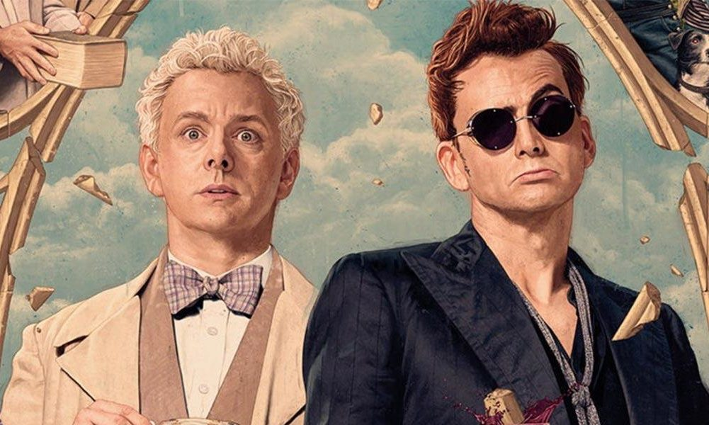

About Crowley
Crowley is an angel that did not fall so much as saunter vaguely downwards. He's flash, cool, and a bit of a drama queen. His heavenly counterpart on earth is the Principality Aziraphale. These two lone agents have long come to An Arrangement, in which they both agree to make their lives on Earth as simple and pleasant as possible in spite of pressure from Upstairs and Below. But when Doomsday comes knocking...
The Principality Aziraphale and The Demon Crowley
What's His Deal?
- Abusive plant dad
- Owner of a vintage Bentley
- Serpent of Eden, creator of Original Sin
- Deep down, at least a little kind
The Other Players
While Crowley may think he's the most important being on earth, he's not alone in having an iron in the fire of the Apocalypse...